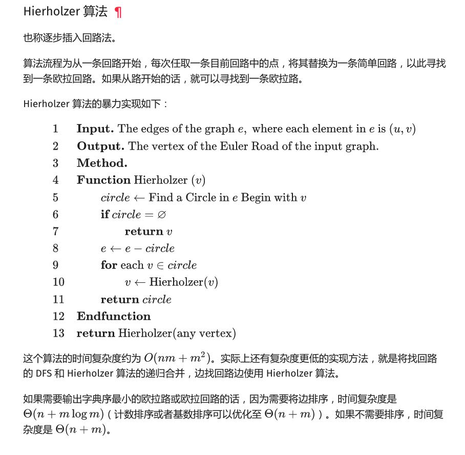

LC 5932. 合法重新排列数对
https://leetcode-cn.com/problems/valid-arrangement-of-pairs/
https://oi-wiki.org/graph/euler/
这题没有什么好的思路，后来看了hint里面提到 "Hierholzer 算法"，于是找到上面这个链接。
仔细想想这个算法其实不怎么难：
- 对于非欧拉回路，第一步要选好初始节点，选择标准就是 `start_counter[x] > end_counter[x]`（数量比end要多）
- 从这个初始节点选择一条路径P
- 遍历这个P中每个节点x，然后从这个节点寻找回路 e
- 那么将e(x->..->x)替换成为这个节点x
- 跳转回2，直到所有路径都被选择完

原理比较好理解，但是我始终没有想到比较好的数据结构，因为每次选择出来回路需要覆盖回去。如果不考虑这个部分的实现， 算法复杂度好像还可以，大约是在O(N)左右。
class Solution: def validArrangement(self, pairs: List[List[int]]) -> List[List[int]]: from collections import defaultdict, Counter seg = defaultdict(list) sc, ec = Counter(), Counter() for i in range(len(pairs)): s, e = pairs[i] seg[pairs[i][0]].append(i) sc[s] += 1 ec[e] += 1 head = pairs[0][0] for x in sc.keys(): if sc[x] > ec[x]: head = x break def find_path(node): path = [] while True: ps = seg[node] if not ps: break index = ps.pop() path.append(index) node = pairs[index][1] return path ans = find_path(head) while len(ans) != len(pairs): for i in range(len(ans)): node = pairs[ans[i]][0] ext = find_path(node) if ext: ans = ans[:i] + ext + ans[i:] break # print(ans) return [pairs[x] for x in ans]
UPDATE: 其实我们在find_path的时候不断地循环查找head的所有路径，一旦确认head所有路径都被查找完成了，就可以推送到ans里面，否则继续放在queue里面。 我觉得下面的实现应该是更加高效，虽然提交的时候运行时间更长了，整个时间复杂度应该是O(N).
class Solution: def validArrangement(self, pairs: List[List[int]]) -> List[List[int]]: from collections import defaultdict, Counter seg = defaultdict(list) sc, ec = Counter(), Counter() for i in range(len(pairs)): s, e = pairs[i] seg[pairs[i][0]].append(i) sc[s] += 1 ec[e] += 1 head = pairs[0][0] for x in sc.keys(): if sc[x] > ec[x]: head = x break ans = [] queue = [] def find_path(node): path = [] while True: ps = seg[node] if not ps: break index = ps.pop() path.append(index) node = pairs[index][1] return path path = find_path(head) for x in reversed(path): queue.append(x) while queue: head = pairs[queue[-1]][0] while seg[head]: path = find_path(head) for x in reversed(path): queue.append(x) ans.append(queue.pop()) # print(ans) return [pairs[x] for x in ans]